The auto-correlator consists of 2 parts which are:
A interferometer of MICHELSON which makes it possible to interfere the wave to be analyzed with the reference wave for that one displaces one of the mirrors of a distance L m1 which depends on the duration of the laser pulse to be analyzed. This distance is 150 microns for a pulse of 1ps and 15cm for a pulse of 1ns (1000ps)
To make these measurements I realized a test bench on a mobile optical table to move it next to the laser to measure.
The second part is the detection of the interferometric signal by means of double photon absorption in a GaP semiconductor.
In a first series of measurements we use a "voice coil" which activates a mirror support on a ball slide.
A second series of measurements will be done with a "voice coil" equipped on its stem with a retro-reflector (tri-prism)
A third series of measurements will be made with a mirror glued on a piezoelectric transducer (PbTiO 3 ) used to measure femtosecond pulses 10fs L m1 = 1.5 micron!
The detector in 2-photon absorption mode at a resolution lower than the femtosecond!
A 4th series of measurement will be carried out with a mirror mounted on a slide of 150mm running with a stepper motor which will measure pulses between
10fs and 1ns.
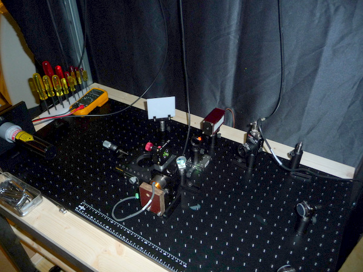
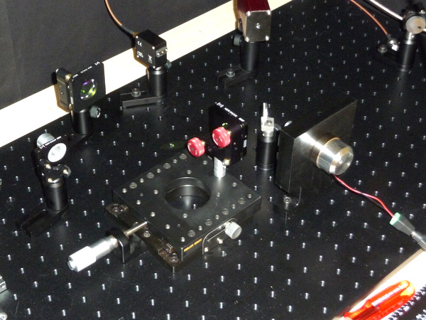
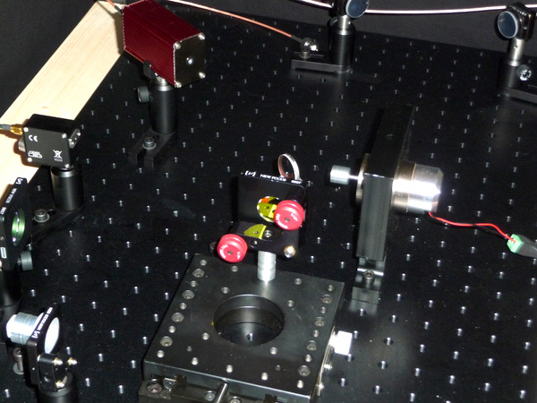
Here are 2 small animations to understand how the Michelson interferometer works ::
1st series of measurements "voice coil" provided with plane mirror elastics
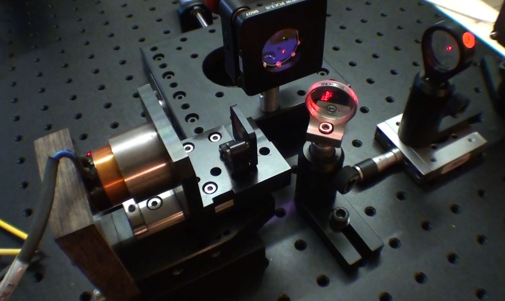
Voice coil with its slide
with a plane mirror
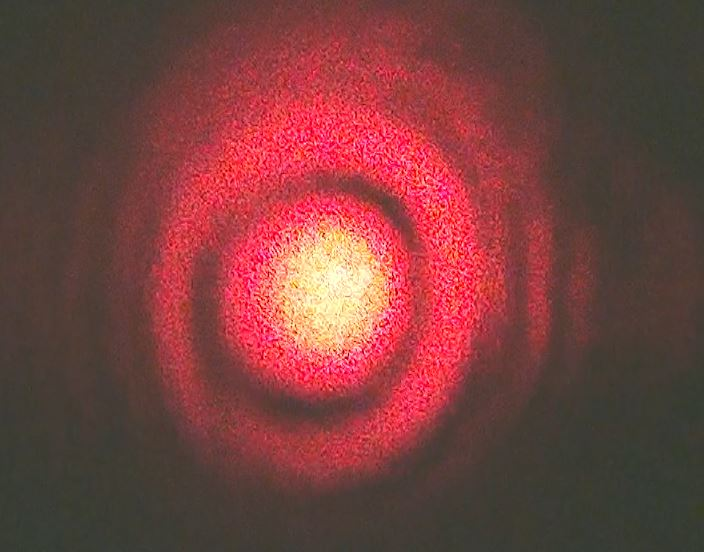
Image of the rings of interference
Time electrical signal delivered by the photodiode.
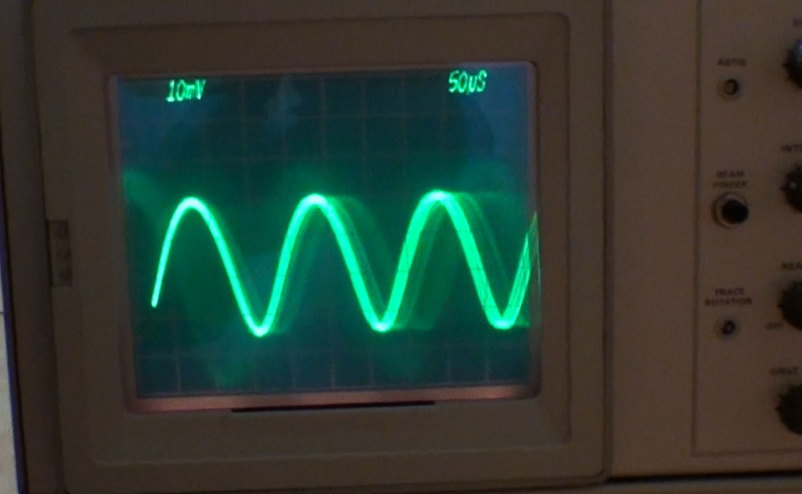
Signal of the photodiode according to the displacement of the mirror.
Voice coil at 300Hz
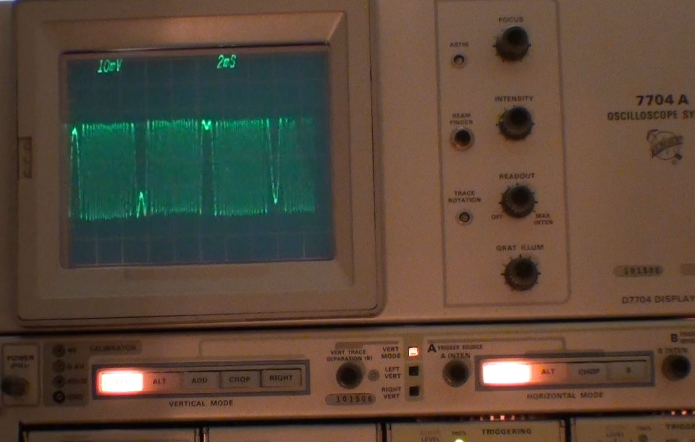
Voice coil at 500Hz
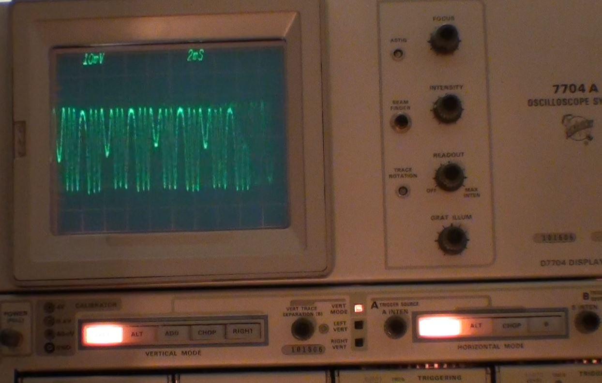
Voice coil at 1KHz
HD Video
2nd series of measurements "voice coil" equipped with a tri-prism.
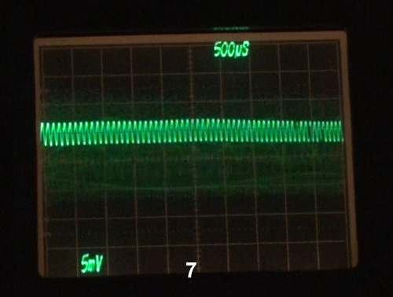
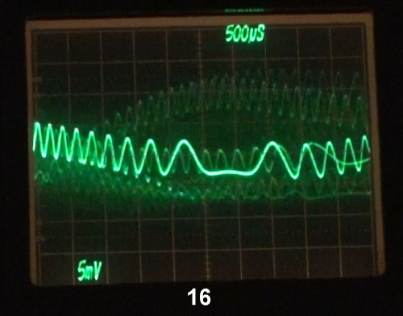
3rd series of measurement: manual displacement with micrometer screw and beam expender
The mobile mirror is mounted on a precision slide provided with a micrometer screw which allows to move one of the mirrors manually.
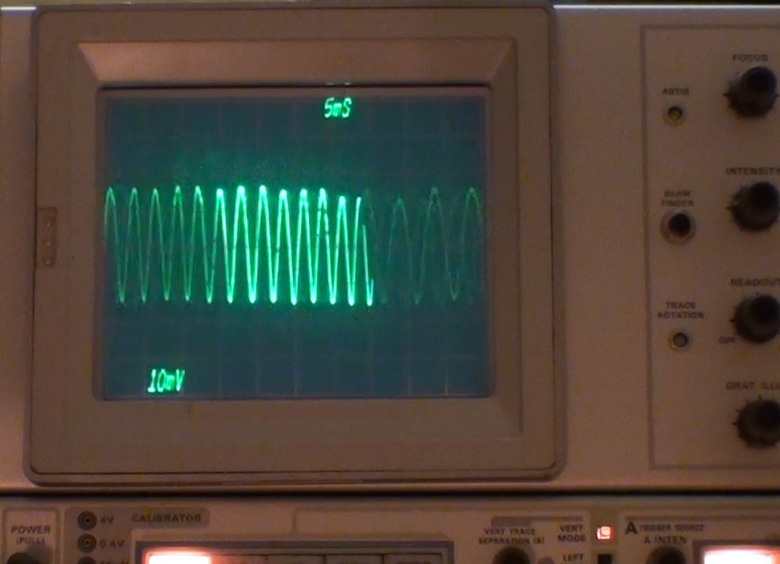
4th series of measurement: Piezoelectric piezoelectric actuator in PbTiO3.
In this test I use a Bimorph blade in PZT glued by a drop of silicone glue on one side only and an aluminized mirror of 6mm diameter glued a middle of the bimorph according to the diagram below:
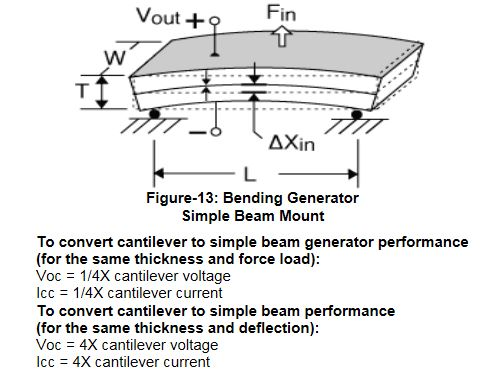
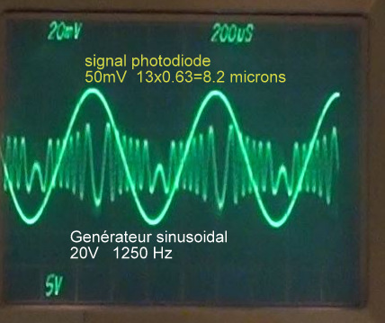
Signal analysis: The generator gives a sinusoidal signal of 20 volts at 1250 Hz.
The bimorph PZT follows the signal with a slight phase shift of about 30°.
The interference signal received on the photodiode is 50mV.
Each sinusoid corresponds to a wavelength of the source laser here a HeNe laser is 623,8nm. There are 13 sinusoids over a period of 8.2 microns!
I also did tests with a triangular and square signal.
The major problem with the bimorphs is the resonance which means that for some frequencies they are not adapted.